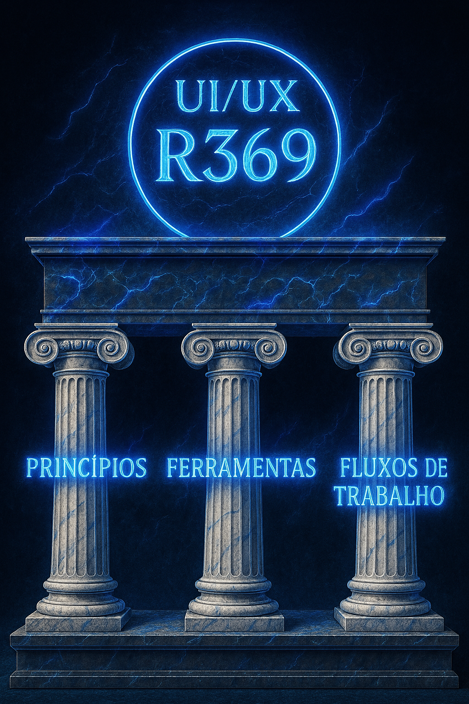

4.2: Construindo seu Ecossistema de Vanguarda
MÓDULO 4: SIMULAÇÃO E OPERAÇÕES DE VANGUARDA
O Blueprint do seu SO Pessoal
Todo sistema operacional de vanguarda se sustenta em três pilares.

Pilar 1: Os Princípios (Sua 'Carta Magna')
Defina suas próprias regras para o trabalho e a informação.
Pilar 2: A Pilha de Ferramentas (Sua Arquitetura)
Escolha ferramentas para funções distintas e soberanas.
Pilar 3: Os Fluxos de Trabalho (Seu Processo)
Conecte as habilidades do curso com suas ferramentas e princípios.